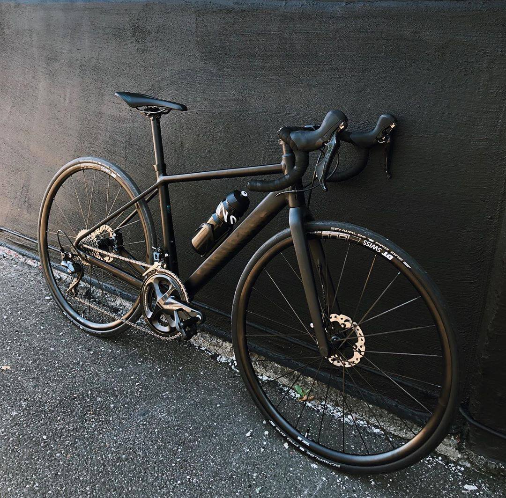

Special features of road bike
A road bicycle is designed for speed, efficiency, and performance on paved surfaces. It features a lightweight frame, thin smooth tires, and drop handlebars that allow riders to adopt an aerodynamic position. These characteristics make road bikes ideal for covering long distances quickly and with less effort compared to other types of bicycles.
Follow these links to learn more about bicycle types:
Road bikes typically come with multiple gears, enabling riders to handle both flat terrain and steep climbs. The riding position encourages forward-leaning posture, which maximizes power transfer and reduces wind resistance. Because of their design, road bikes are not well suited for rough terrain, but they excel on city streets, highways, and racing tracks.
They are widely used in competitive cycling, including road racing, triathlons, and time trials. Road bicycles are best suited for those who value speed, endurance, and efficiency, and who primarily ride on pavement.